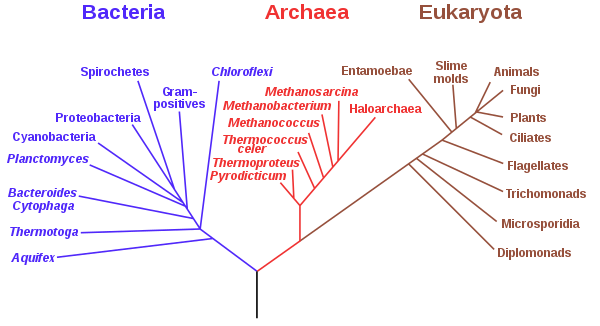
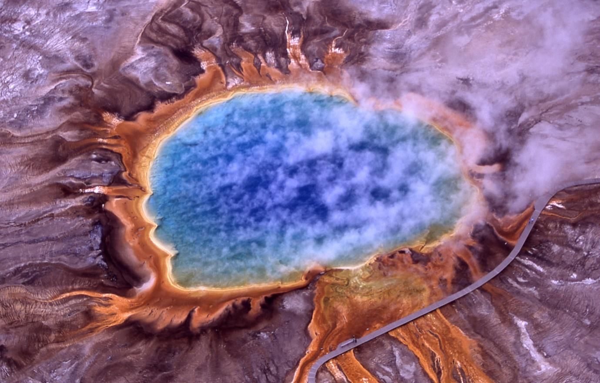
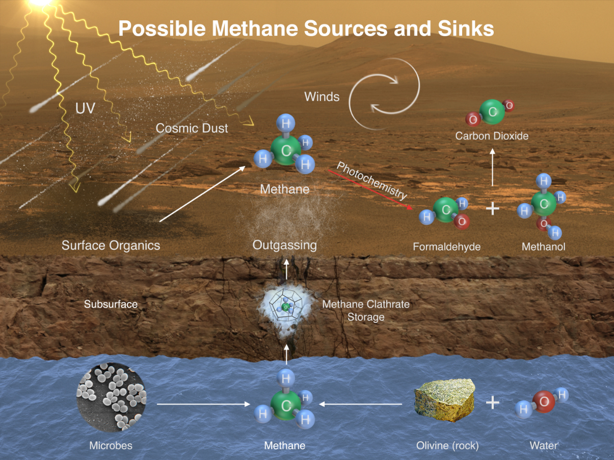
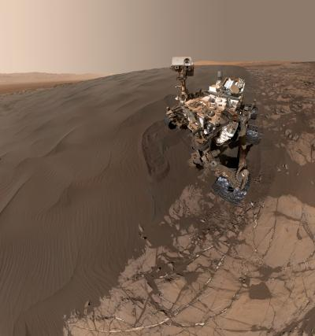
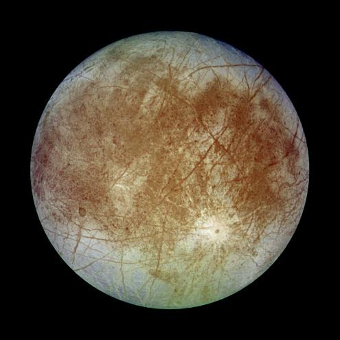
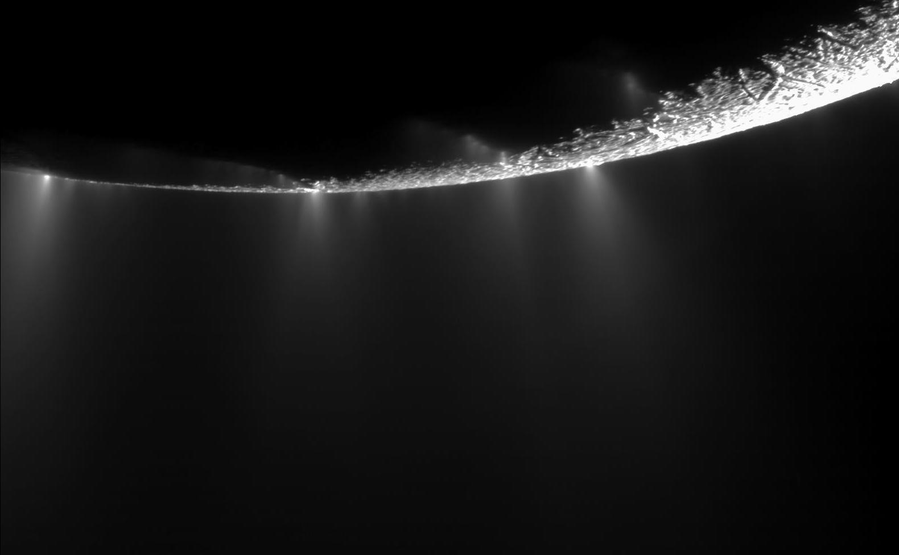
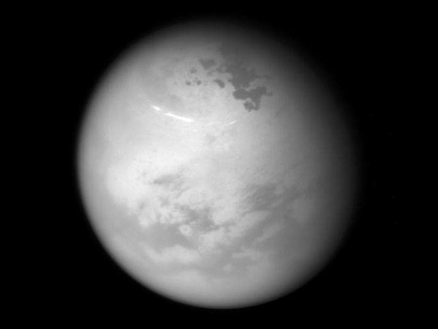

Astrobiology: Exploring the universe for signs of extra-terrestrial life
The only life forms we know about are the ones that exist on Earth. Due to advancements in space exploration, it has become possible to send rovers, probes, space crafts, and telescopes in further deep space. With the help of these space missions and various other tools, astrobiologists are trying to find signatures of life on other planets, exoplanets, and various moons.
1. Introduction:
Is life a cosmic phenomenon?
Are we alone in the universe?
All of us have wondered about it at some point in our lives. Perhaps only a few would have wondered about what exactly is life. This might sound philosophical at first but it is equally scientific. Astrobiology tries to find answers to all these questions. It is the science that seeks to understand the story of life in the universe. We have not found explicit evidence of life so far but with unceasing curiosity and an inherent urge for exploration, scientists have discovered a lot. Being a multidisciplinary field, Astrobiology brings people with diverse backgrounds together to achieve a common goal – the search for life beyond Earth and beyond the solar system. The origin of life on Earth is a great mystery and therefore scientists are investigating the problem in several different ways. Some are studying life on our own planet. Some are seeking out life or fossil life on other planets or moons in our solar system. Others are trying to detect life in other solar systems, either by measuring life’s effects on the atmospheres of distant planets or by measuring artificial radiation like radio signals that may be produced by advanced life.
2. Life on Earth:
We only know the nature of life as it exists on Earth. It is built around compounds that contain elements such as carbon, nitrogen, hydrogen and oxygen. Complex sequences of these elements bond together, forming the very building blocks of life. They form essential organic molecules, such as carbohydrates, amino acids, lipids and nucleic acids (DNA and RNA). However, these organic molecules did not naturally exist on Earth during the Hadean eon (4.0 billion years ago and preceding the existence life forms). The elements required existed only in inorganic form, bound up within the rocks, atmosphere and the early ocean. It is estimated that life on Earth began at least 3.5 billion years ago, because that is the age of the oldest rocks with fossil evidence of life on Earth. Researchers suggest that in order to understand how life began on Earth, we need to understand the specific environmental conditions and other requirements that must be satisfied to allow this to occur. What are the habitability requirements of known Earth life?
The fundamental habitability requirements are certainly some of the commonalities of life on Earth.
• Energy: A source of energy is necessary for metabolism and to maintain the functions carried out by a cell. Life on Earth uses either solar energy or chemical energy sources that include both organic (carbon) compounds and inorganic elements and molecules.
• Common essential elements: All known Earth life uses the same main set of elements to form biomolecules (CHNOPS) and shares a common carbon-based biochemistry. Carbon is an excellent element from which to build life, because carbon forms macromolecules with a variety of other elements and itself. Carbon forms primarily covalent bonds (compared to ionic bonds), and carbon-based molecules are stable in the presence of water and oxygen.
• Solvent: A solvent to host chemical interactions is considered a universal requirement for all life. With extensive evidence that all Earth life needs water specifically as the solvent, many astrobiologists consider water to be the most probable solvent for life.
When considering whether an environment or planet is habitable, at a minimum, scientists take into account the potential energy source (or sources), the ambient chemical composition and whether this composition is suitable to build biomass, and the availability of a solvent. Additionally, there are physical constraints upon life (e.g., temperature, pressure, pH, salinity, radiation, metal toxicity) such that the presence of these habitability requirements may be necessary but not sufficient for life.
2.1 Life on Earth is divided into three domains:
Archaea, Bacteria, and Eukarya (or Eucarya); Single-celled organisms are common in all three domains, and all organisms in the domains Archaea and Bacteria are single-celled. All multicellular organisms fall within the domain Eukarya. The term ‘‘prokaryotes’’ has traditionally been used to describe single-celled organisms that do not contain a nucleus, organelles, or a cytoskeleton (collectively, the domains Bacteria and Archaea). The majority of life on Earth is microbial, and astrobiologists extrapolate from that fact to conclude that the majority of any extraterrestrial life that may possibly exist is also likely to be microbial. Archaea and Bacteria are the focus of astrobiological studies due to the diversity of metabolic strategies utilized by them and their ability to thrive in extreme habitats, their pivotal role in Earth’s biogeochemical cycling, and the fact that single-celled organisms dominated the early history of life on Earth. Bacteria and Archaea harbour the vast majority of the genetic diversity of life on Earth. Scientists estimate that, to date, less than 1% of microbial life has been successfully cultivated (e.g., grown in the laboratory). Therefore, molecular methods that do not require cultivation are also used to detect the presence and genetic capabilities of microbes through DNA (metagenomics), RNA and gene expression activity (metatranscriptomics), and transcribed proteins (metaproteomics). These techniques have demonstrated that microbial populations are highly complex and that we have only begun to elucidate the full extent and capabilities of microbial life.

Image 1: A phylogenetic tree based on rRNA data, emphasizing the separation of bacteria, archaea, and eukaryotes, as proposed by Carl Woese, George E. Fox et al. in 1990. Image source: Carl Woese et al. (1990)
2.2 Prevalence of life in extreme environments:
When space agencies first began to explore the Solar System, scientists were not sure what they would find on the surfaces of planets like Mars and Venus. When space missions revealed Mars to be a frigid desert, and Venus a boiling cauldron, void of any obvious signs of life, astrobiologists began to wonder… what are the limits of habitability for life as we know it? How hot is too hot? How cold is too cold? How much acid can cells handle, and how little water can life survive on? Answering questions like these opened an entire field of study known as extremophile research, where scientists examine the adaptations of organisms in conditions that are considered ‘extreme’ for life on Earth. These hardy lifeforms can help us better understand how life as we know it might originate, evolve, and reproduce in harsh environments in the Solar System and beyond. On a tour of extreme environments on Earth, a good place to start is with terrestrial hot springs. Good examples include Yellowstone National park in the United States, Rotorua in New Zealand and Puga hot spring in Ladakh, India These environments were the first to draw the interest of astrobiologists that study the limits of life on Earth, and they are arguably the first environment in which an extremophile, Thermus aquaticus was isolated and documented by scientists.

Image 2: Aerial view of Grand Prismatic Spring; Hot Springs, Midway & Lower Geyser Basin, Yellowstone National Park. Image courtesy: Jim Peaco, National Park Service
{kind=link}
These springs are where geothermally heated water from underground rises to the planet’s surface. They can act as a source of water, energy, and nutrients for living cells. The water boiling up from below can carry a wide variety of minerals and reduced chemical species that certain microbes can use as a source of energy. Microorganisms have been found here living in pools of up to 206 degrees Fahrenheit (97ºC). The composition of the water depends on many different factors, such as its source and the types of rock and soil it travels through. It’s not just the heat that challenges life’s survival in hot springs. Some springs have water that is very acidic, others have water that is extremely alkaline. Gases at concentrations poisonous to humans, and other animals, bubble up with the water. The rock and liquid can contain heavy metals like arsenic and lead, along with lots of other minerals and particulates. Some pools can be extremely salty, and are rich in potassium and sulphate. High temperatures also mean less dissolved oxygen, so many hydrothermal pools are low in oxygen content.
The multitude of harsh conditions present in terrestrial hot springs also means that it isn’t only thermophiles that live in these environments. There are acidophiles, alkaliphiles, and many other types of organisms. Sometimes scientists find extremophiles that use multiple adaptations to survive (polyextremophiles). On Earth, wherever we find liquid water, we find life, whether in bubbling hot springs, drops of brine inside ice, or films of water around minerals deep in the crust. Up until 1977, scientists believed that all life on Earth was in some way dependent upon sunlight for energy. The discovery of hydrothermal vents showed that life could thrive independent of the Sun. Suddenly, scientists had an Earthly example of how life might survive on ocean worlds in the outer Solar System, such as Jupiter’s moon Europa, or Saturn’s moon Enceladus. These moons are thought to harbor oceans of dark, liquid water beneath their icy surfaces. If hydrothermal vents are present, those oceans could be habitable for life as we know it.
2.3 How do we search for signs of life beyond Earth?
Astrobiological exploration is founded upon the premise that biosignatures encountered in space will be recognizable as presence of extraterrestrial life. A biosignature is any substance – such as an element, isotope, or molecule – or phenomenon that provides scientific evidence of past or present life. The usefulness of a biosignature is determined not only by the probability of life creating it but also by the improbability of non-biological (abiotic) processes producing it. Concluding that evidence of an extraterrestrial life form (past or present) has been discovered requires proving that a possible biosignature was produced by the activities or remains of life. As with most scientific discoveries, discovery of a biosignature will require evidence building up until no other explanation exists.
Thus, we can look for atmospheric gases such as oxygen or methane that can be produced by life. Such planetary features that indicate life are biosignatures. The simultaneous presence of oxygen and methane is evidence for life because these two gases should quickly react with each other unless a biosphere is producing great amounts of them, which prevents equilibrium. Microbial life will readily consume hydrogen or carbon monoxide gas, so an abundance of either of these might be considered an anti-biosignature for a planet in the habitable zone. Eg. The presence of methane in the atmosphere of Mars is an area of ongoing research. Because of its tendency to be destroyed in the atmosphere by photochemistry, the presence of excess methane on a planet can be an indication that there must be an active source. With life being the strongest source of methane on Earth, observing a disequilibrium in the methane abundance on another planet could be a viable biosignature.

Image 3: This illustration portrays possible ways that methane might be added to Mars' atmosphere (sources) and removed from the atmosphere (sinks). NASA's Curiosity Mars rover has detected fluctuations in methane concentration in the atmosphere. Image courtesy: NASA/JPL-Caltech
3. Habitability in the solar system:
After Earth it is absolutely logical to explore habitability of planets in our solar system. Planet Mars, in the inner solar system is a potential candidate to search for life beyond Earth. Simultaneously, moon of Jupiter (Europa) and moons of Saturn (Titan and Enceladus) in the outer solar system are also promising and extensive research is currently being conducted. The type of life that we are considering is simple, comparable to microbes, and the guiding principle concerns liquid water.
3.1 Mars: Many have imagined Mars, unlike Venus, as a potential abode for life. The atmosphere of Mars is much thinner than Earth’s. The Red Planet’s atmosphere contains more than 95% carbon dioxide and much less than 1% oxygen. Temperatures on Mars average about -81 degrees F. However, temperature’s range from around -220 degrees F in the wintertime at the poles, to +70 degrees F over the lower latitudes in the summer. Mars Global Surveyor, which orbited from 1997 to 2006, mapped Mars and imaged sedimentary layers that implied many geologic cycles of erosion and deposition. In the early 21st century, the Mars Odyssey and Mars Express orbiters, along with Mars Reconnaissance Orbiter, discovered areas of clay minerals and salts, which may have formed in liquid water. Twin Mars Exploration Rovers landed in 2004, and found fossilized ripples from past liquid water and sedimentary rocks, while in 2008, NASA’s Phoenix Lander dug up subsurface ice in a polar region and measured soluble salts in the soil. Finally, in 2012, Curiosity Rover trundled towards a 5-kilometre-high mountain of sedimentary beds within a 150- kilometre-diameter crater named Gale. It found mudstones deposited from water. Nowadays, astrobiological interest in Mars concerns either biological traces from billions of years ago or microbial-like life that might possibly endure in the subsurface or underground.

Image 4: Curiosity rover on a Martian sand dune. Image courtesy: NASA
Mars’s current surface is hostile to life for three reasons. First, while ice exists for sure, no liquid water has been identified. The polar caps are water ice, topped with carbon dioxide ‘dry ice’ that grows when about 30 per cent of the atmosphere freezes at the winter pole. Also, above mid latitudes, ice cemented soil or permafrost lies just beneath the surface. In the tropics, afternoon temperatures in the top centimetre of soil rise above freezing, but there, ice turns to vapour before melting temperatures are reached. A second problem is no ozone layer, allowing harmful ultraviolet sunlight to reach the surface. Third, chemical reactions in the atmosphere make hydrogen peroxide— which settles to the surface, where they can destroy organics. While the surface is unpromising, geothermal heat underground might allow liquid water and life to exist. Evidence that liquid water used to be present suggests that Mars was once more habitable than today. Fluvial (stream-related) features in the landscape, including gullies, dried-up river valleys, deltas, and enormous channels are also indicative of the same. Moreover, the soil and rocks contain minerals that form in the presence of liquid water.
3.2 Jovian moon Europa
The Galileo mission detected an induced magnetic field in Europa (a moon of Jupiter), providing compelling evidence for an ocean of liquid water beneath the surface. While the top surface of Europa is not habitable, it is still relevant to discuss here for several reasons: (1) surface materials may reflect the chemistry of a subsurface ocean and help us understand the conditions available to life there, and (2) materials brought to the surface from the ocean below may be the only way we can detect signs of life (e.g., organic matter or other biosignatures characterized spectroscopically on a future mission). Radiation from high-energy particles caught in Jupiter’s magnetic field causes oxidation of surface materials as the energy from radiation knocks electrons out of atoms. Radiolytically produced oxidants at the surface include O2, SO2, H2O2, and CO2. These may be subsequently cycled into the ice shell and ocean on timescales on the order of the age of the surface, 106 years, which is quite young on geological timescales, so these compounds could potentially oxidize more reduced chemical species in the ocean below.

Image5 : Europa, a jovian moon. Image courtesy: NASA
3.3 Icy moons of Saturn :
3.3.1 Enceladus : Enceladus is Saturn’s sixth largest moon and has active geology. In 2005, the spacecraft Cassini started multiple close flybys of Enceladus, revealing its surface and environment in greater detail. It orbits Saturn in an elliptical fashion resulting in varying gravitational forces from Saturn that flex and heat Enceladus. For reasons that are not fully understood, the heating is concentrated under Enceladus’ South pole. There, icy particles and gas spray out of parallel fractures dubbed tiger stripes. The jets contain traces of methane, ammonia, and organic compounds, along with salt. Enceladus has a rocky core, an icy shell, and an underground sea beneath the area of the jets. The jackpot combination of organic molecules, energy, and liquid water implies that life might exist.

Image 6 : Narrow jets of gas and icy particles erupt from the south polar region of Enceladus, contributing to the moon's giant plume. A cycle of activity in these small-scale jets may be periodically lofting extra particles into space, causing the overall plume to brighten dramatically. Image courtesy: NASA/JPL/Space Science Institute
3.3.2 Titan : Titan, the largest moon of Saturn, is also of astrobiological interest because it is the only satellite in the Solar System to have a thick atmosphere. In fact, the air pressure at Titan’s surface is 1.5 bar, which is 50 per cent larger than that at the Earth’s surface. The atmosphere of 95 per cent nitrogen and 5 per cent methane provides a 10°C greenhouse effect, but the sunlight at Saturn’s distance is one hundred times less intense than at Earth, so Titan’s surface is incredibly cold at –179°C.

Image 7 : NASA's Cassini spacecraft sees bright methane clouds drifting in the summer skies of Saturn's moon Titan, along with dark hydrocarbon lakes and seas clustered around the north pole. Image courtesy: NASA/JPL/Space Science Institute
Titan’s atmosphere contains a smoggy haze of hydrocarbons. At high altitude, ultraviolet sunlight breaks up methane molecules (CH4) and subsequent reactions build up hydrocarbons including ethane (C2H6), acetylene (C2H2), propane (C3H8), benzene (C6H6), and reddish-brown particles containing polyaromatic hydrocarbons. The particles are called tholins. The products derived from methane sediment out of the atmosphere. In fact, about 20 per cent of Titan’s surface is covered in tropical dunes that are made of sand-sized particles, which are at least coated with organics if not made of them. At the poles, over 400 lakes are mixtures of liquid propane, ethane, and methane, with extraordinary beaches made of particles of benzene and acetylene. Methane on Titan behaves like water on Earth and forms clouds, rain, and rivers. Most of our knowledge about Titan comes from the Cassini–Huygens mission, which arrived in 2004. Huygens landed on Titan in 2005. Titan flexes too much to be entirely solid, which is evidence that Titan has a subsurface ocean which might exist below an icy crust. Two types of life might exist on Titan: Earth-like life in the subsurface ocean; and non-DNA based life or life which has a different biochemistry in the hydrocarbon lakes.
4. Habitability beyond solar system :
Finding exoplanets is crucial before identifying a habitable one. With the vast distances involved, the search is difficult but nonetheless astronomers have developed two classes of methods. The first, indirect detection, looks for stellar properties, such as position or brightness, which are affected by the presence of unseen planets. The second is direct detection of a planet with an image or a spectrum of its light. For astrobiology, the most important techniques are direct detections that capture light from a planet. Direct detection is challenging because a planet is a dim body close to a vastly brighter star. Nonetheless, telescopes in space, such as the Hubble Space Telescope, James Webb Telescopes and extremely large telescopes on the ground have accomplished direct detection using a coronagraph, which is a mask to block the starlight. With density measurements, there are increasing clues about which exoplanets are made of gas, rock, water, or some mixture. We care most about exoplanets with liquid water right at the surface. These have the chance of a biosphere that pumps lots of gases into an atmosphere. In principle, such biogenic gases are detectable in the light from the planet and might indicate life. If a planet is too far away from its host star it ices over, and if it’s too close it’s too hot for liquid water. The term habitable zone (HZ) refers to the region around a star in which an Earth-like planet could maintain liquid water on its surface at some instant in time. We specify a particular time because stars age and brighten or dim, so the HZ moves. The closest star to Earth is a triple-star system called Alpha Centauri which is at a 4.25 – 4.35 light years distance. The list of potentially habitable exoplanets is mostly based on estimates of habitability by the Habitable Exoplanets Catalog (HEC), and data from the NASA Exoplanet Archive. The HEC is maintained by the Planetary Habitability Laboratory at the University of Puerto Rico at Arecibo. Surface planetary habitability is thought to require orbiting at the right distance from the host star for liquid surface water to be present, in addition to various geophysical and geodynamical aspects, atmospheric density, radiation type and intensity, and the host star’s plasma environment.
5. Conclusion :
Astrobiology is intriguing and challenging at the same time. Research done on origin of life and extremophiles is used to extrapolate to other planets and various moons in the solar system. Astrobiologists are primarily interested in the subsurface water oceans of these planets. Overall, follow the water has been the motto. All space agencies keep executing ambitious space missions probes, rovers, spacecrafts, telescopes, etc. Another aspect of Astrobiology which pushes science boundaries is exoplanet search. Habitable planets beyond our solar system are actively being sought after. Bio-signatures help us detect presence of Earth-like life in our solar system and beyond it. With the advancement in technology for space exploration one can expect that humans will exist as a multiplanetary species in future. There is a possibility that we are alone in the universe or who knows we might find life elsewhere. Till then let’s keep our fingers crossed.
6. References :
- NASA Astrobiology Primer v2.0 Shawn D. Domagal-Goldman and Katherine E. Wright
- Astrobiology- A Very Short Introduction by David C. Catling
- Astrobiology : Understanding life in the Universe by Charles Cockell